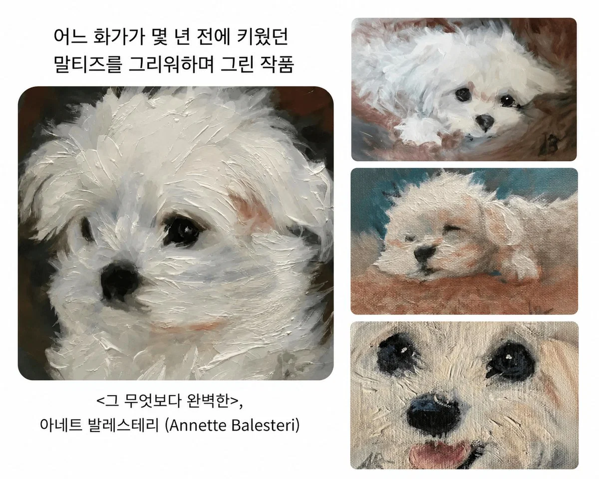
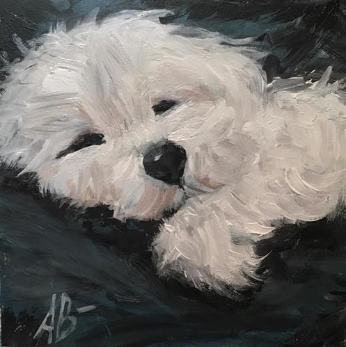
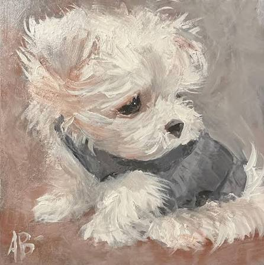
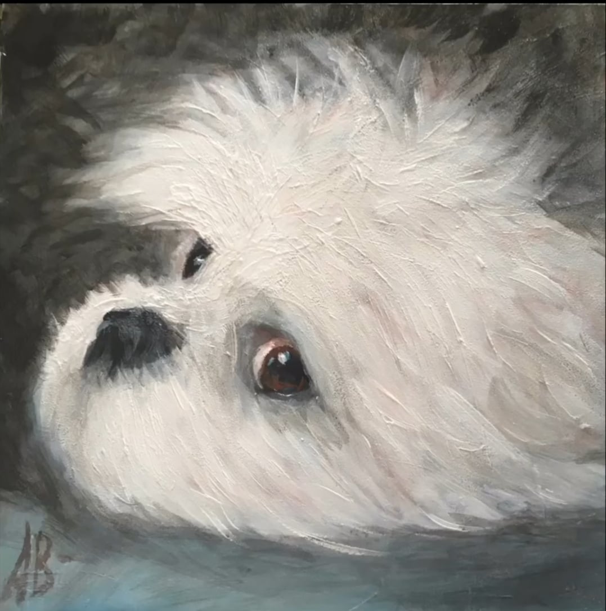
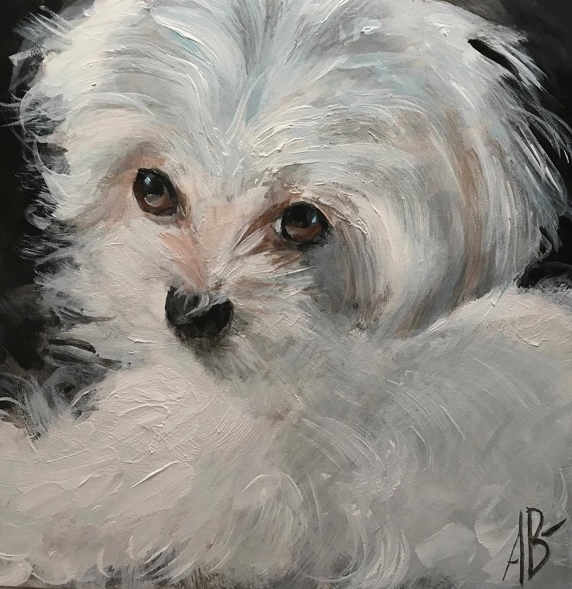
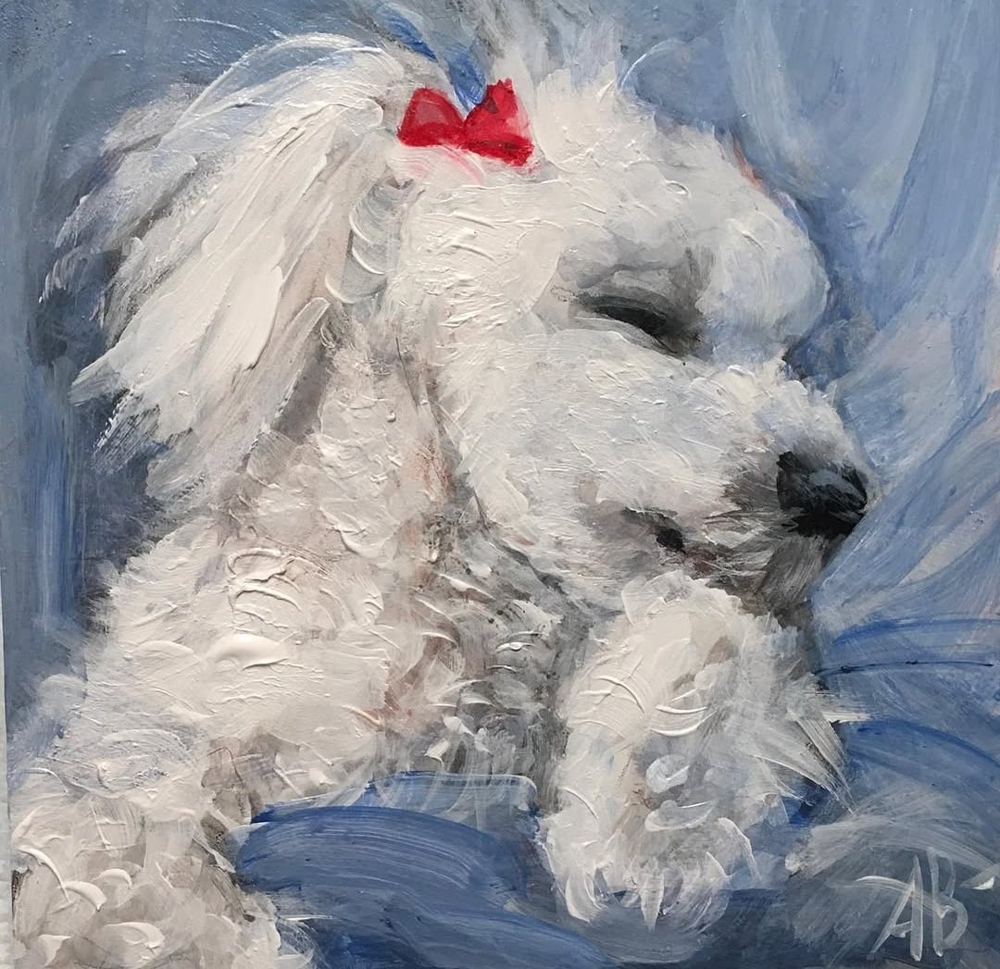
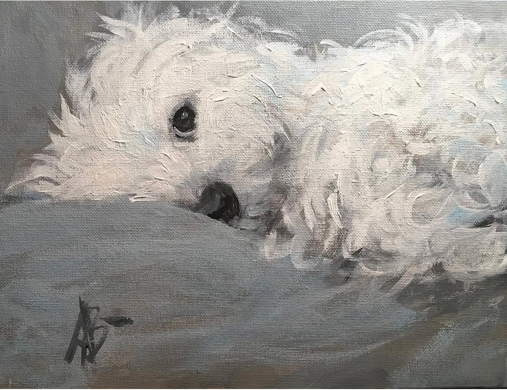
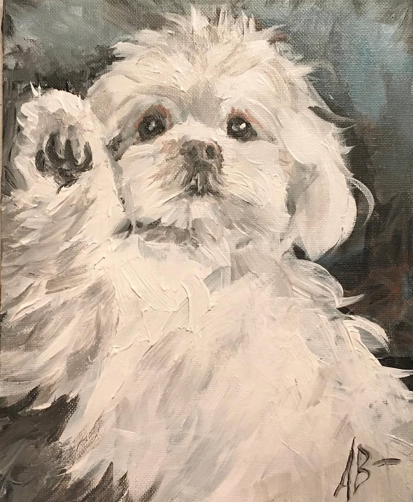
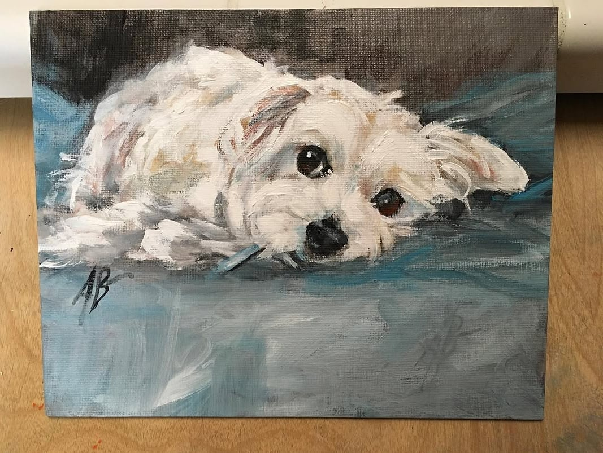

Little couch potato (쪼끄만 집순이)

The first gifted sweater (처음으로 선물받은 스웨터)

Ain't misbehaving(난 잘못 안했어)

A wounded soul(상처받은 영혼)

A Sleeping Angel(잠든 천사)

Waking up near you(당신 옆에서 눈 뜨다)

A sweetest goodnight(가장 달콤한 밤인사)

Loving you(너를 사랑하며)
감정이 느껴짐


꼬순내 나는거 같어